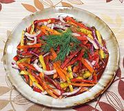

|
Sweet Pepper Rainbow SaladNorth America | ||||
| Makes: Effort: Sched: DoAhead: |
1-1/4 # ** 45 min Yes |
Attractive and delicious, this salad is good for buffets as it looks good, will not wilt, is easy to serve with tongs, and can be made ahead. | |||
|
1 6 3 ------ 3 3 1/2 1/4 ------- |
# oz T --- T T t t --- |
Sweet Peppers (1) Red Onion Dill, fresh -- Dressing Olive Oil ExtV Vinegar, white wine Garlic Salt Pepper -------------- |
Make - (45 min)
|